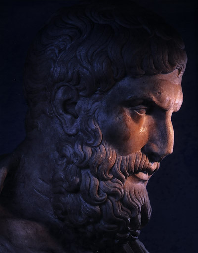

Epikür
Epikür Kimdir ?
MÖ 341'DE Samos'ta veya Atina'da doğan Epikuros, önce Lesbos (bugün, Midilli) Adası'nda, sonra Anadolu'nun Lampsakos (bugün, Lapseki) Kenti'nde ders verdikten sonra, MÖ 306'da, Atina'da, okulu kendi adıyla anılan büyük bir bahçeye yerleşti. Orada ölümüne kadar bir filozoflar ve dostlar meclisini çevresine topladı: Epikuros'un Bahçesi. Maddeci bir filozof olan Epikuros, Demokritos'un atomculuğunu sürdürmüş, yenilemiş ve onun temelleri üzerinde insan mutluluğunu öne çıkaran bir haz felsefesi kurmuştur. Epikuros'a ait 300 kadar eserden günümüze kadar ancak Diogenes Laertios'un on kitaplık "Ünlü Filozofların Yaşamları, Öğretileri ve Özdeyişleri"nde (Peri Bion Dogoraton kai Apoftegmaton) yer alan üç mektubu ve 40 özdeyişini içeren "Temel Öğretiler" (Kriai Dohiai) adlı eseri ulaşmıştır. Heredetos'a yazdığı mektup, fizik üzerinedir ve atomculuğun temel ilkelerini içerir. Pitokles'e mektubu, jeoloji, meteoroloji ve gök olayları konularını içermekte; Moekeus'a mektubuysa, etik dolayısıyla, yaşama sanatı ve bilgelik üzerinedir. Epikuros'un felsefesiyle ilgili diğer kaynaklar, Herculanum kazılarında Papiri Evi'nde bulunan papirüsler ve çok daha yeni olarak XIX. yy'da Vatikan el yazmalarında ortaya çıkarılan "80 Vatikan Özdeyişi"dir.
Epikür Felsefi Görüşü Nedir ?
Epikür felsefesi, İ.Ö. 307 civarında kurulmuş ve bir insanın arayabileceği en büyük iyiliğin mütevazı zevkler olduğunu öğretmiştir. Bu bizi huzura, acı ve korkunun yokluğuna getirir. Kendimizi sıkıntılardan kurtardıktan sonra, mutluluk ve dinginlik içinde basit bir hayat yaşayabiliriz.Epikür felsefesi, gerçek huzura ulaşmamız için, dünyanın nasıl işlediğini ve arzularımızın sınırlarını öğrenmemiz gerektiğini öğretir. Erdem ve sadelik ile "neşeli yoksulluk" içinde yaşamaya başlayabiliriz.
Haz ve Acı
Epikür, hedonizmi andıran bir biçimde, mutluluğun ve iyiliğin ölçütü olarak haz ile acı kavramlarını temel alır. Fakat bu kavramları Hedonistler ‘zevk, eğlence ve neşeye ulaşma’ hedefini açıklamakta kullanırken Epikürcüler bunu ‘beden sağlığı ile ruhsal dinginliğe ulaşmak’ hedefini açıklamakta kullanır.
Haz, basitçe acı veren şeylerden kaçıp dinginliğe ulaşmak anlamına gelir. Acı ise biyolojik açıdan açlık, susuzluk, üşümek, hastalanmak gibi durumlardır; manevî açıdan ise ruhsal gerginlikler, depresyon, korku, endişe, kaygı hâlinde bulunmak anlamına gelir.
Epikür, arzuları üçe ayırır:
Doğal ve zorunlu: Hayatta kalacak ölçüde beslenmek, barınma, sağlıklı olmak...
Doğal ama zorun olmayan: Fazladan beslenmek, cinsel faaliyetler…
Ne doğal ne de zorunlu: Mal mülk edinmek, şöhret, ihtişam, lüks…
Episteme ve Din
Akıl, doğru yaşama ulaşmak için gerekli olan bilginin üretilmesini sağlayan bir araçtır. Doğru bilgi olmadan doğru eylemlilik olmayacaktır; doğru bilginin ölçütü ise ikili bir temele sahiptir, ilki duyu verileri ikincisi ise haz ve acı duygularıdır. Bilgi konusunu dinle ilişkilendirerek açıklayan Epikür, materyalist bir birey olduğu için efsanelere, dinî mucizelere ve doğa olaylarının olağanüstü sebeplerle açıklanmasına karşı çıkar. İnsanın, erdemli ve dingin bir hayata ulaşabilmesi için korkularından arınması gerektiğini, bu yüzden de korkutucu ve asılsız bilgiden (dinden) kaçınıp, sarsılmaz olan hakiki bilgiye (materyalizme) erişmek gerektiğini söyler. Epikür, bilgi konusunda duyumcudur. Yani, bilginin ancak duyular ile elde edilebileceğini düşünür. Bununla birlikte, duyulardan elde edilen bilginin ispata ihtiyacı olabileceğini de söyler. Bu doğrultuda episteme konusunda akla da önem verir. Ona göre duyuların bilgisi her zaman doğru olmayabileceği için, doğru bilgi ile yanlış bilgiyi ancak akıl ayırt edebilir. Dolayısıyla ona göre bilgi önce duyularımızla algılanmalı, ardından da akıl süzgecimizden geçmelidir.
Kader
Demokritos ve Leukippos, atomların, bir engelle karşılaşmadıkları sürece dümdüz akıp gittiğini düşünürdü. Fakat Epikür, o ikisinden farklı olarak atomların sürekli olarak farklı farklı yönlere hareket ettiğini söyler. Ve buna bağlı olarak da kaderi açıklar: “Bazı olaylar tanrının belirlediği değişmez yazgıyla, bazıları kontrol dışı gerçekleşen rastlantılarla, bazıları da bizim irademizle gerçekleşir.” Böylece insanların özgür istence sahip oluşu, doğa felsefesiyle temellendirilir. Ona göre insan, mutlak ve kaçınılmaz bir zorunluluğun kölesi olamaz, kendi kaderini belirleyebilir. Elbette insan iradesi birçok içsel ve dışsal koşul tarafından belirlenmektedir; ancak insan bunlara rağmen kendi kararını verebilmekte, hatta içinde bulunduğu koşullar hakkında da kararlar alabilmektedir ve bu anlamda koşullarına mutlak anlamda bağlı değildir. Ayrıca Epikür yasaların bu kararları etkilemesine izin vermememiz gerektiğini de anlatır. Bunu şu sözleriyle açıkça belirtmiştir; “Kural insan için bir hapishanedir. Çünkü insanı hapseder ve onun özgürlüğünü elinden alır.”
Ruh ve Ahiret
Demokritos'un atomcu teorisinden etkilenen Epikür, canlı ve cansız tüm evrenin bölünmez ve parçalanmaz atomlardan oluştuğunu söyler. Doğadaki her şey atomların mekân içindeki hareketlerinden meydana gelmektedir. Ruh konusunda maddi bir açıklama öne sürer: Ona göre insan ruhu maddi bir niteliğe sahiptir, başka türlü var olabilmesi söz konusu olamaz. Canlıların ruhu bu atomların arasında bulunan küçücük parçacıklardır. Ölüm gerçekleştiği zaman atomlar parçalanır; bunun ardından ruh parçacıkları da dağılıp gider. Dolayısıyla ölümsüzlük ya da ruh göçü diye bir şey olamaz. Ahiret hayatının olmayacağı fikri Epikür'ü hazcılığa yönlendirmiştir. Tek ve kısa bir ömrü olan birey, hayatı boyunca mutluluk ve hazza ulaşmak için çabalamalıdır. Dolayısıyla tanrı ve ölüm korkusundan kurtulmalıdır. Kuruntulardan ve önyargılardan arınarak buna ulaşılabilir. Ölümden sonraki hayatı ve ilâhî yargılanmayı reddeder. Ruhun da tıpkı beden gibi ölümlü olduğunu düşünür. “Ölüm bizim için hiçbir şeydir, bu fikre alış.” der Epikür. Zira acılar ve hazlar ancak duyular ile algılanabilir. Öldüğümüzde ise duyularımız da yok olacağı için acı ve hazları algılayamayız. Bu nedenle ölümden kaygılanmak gereksizdir diye düşünür. Tanrılardan korkmamak gerek çünkü tanrılar evrene müdahale etmez. Bu düşüncesiyle Epikür Tanrı kavramını dışta bırakmaya çalışır. Tanrının varlığı yokluğunu değil dünyaya karşı ilgisizliğini belirtir.